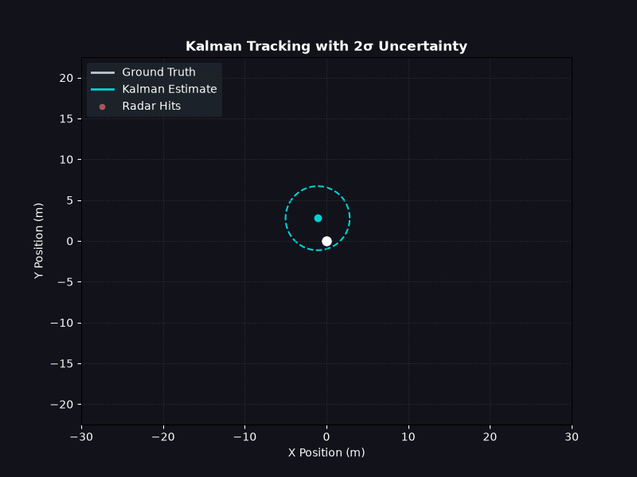
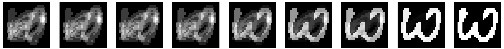
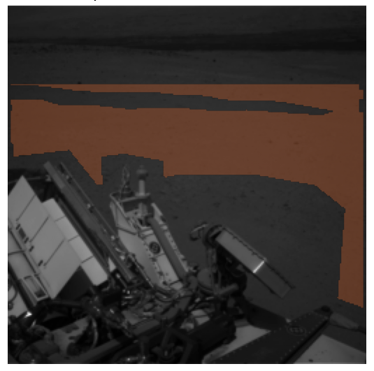
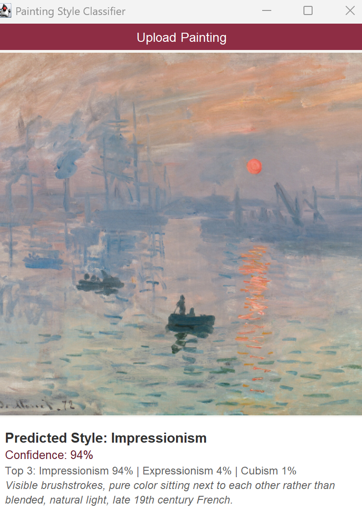

Kalman Filter Vehicle Tracking
Kalman filter tracking a manoeuvring vehicle from noisy, position-only radar; with tuning, consistency and dropout experiments.
View on GitHubApplied CS & AI Student @ Sapienza University of Rome, building intelligent systems
I am interested in AI and robotics, anything that could be called intelligent really. That's why AI and machine learning truly captivate me. And it's even better when you give it a body and have a robot in front of you. That's what I would like to work on, a physical entity with a so-called brain that can act on its own. So, I like to be hands-on, in the field and dive deep into whatever I am working on. That's why I am in the navigation department of SASA, Sapienza's rover team. I also have an immense curiosity about the human brain (of course I do, what is more intelligent than that?), hence my side passion for computational neuroscience.
Besides all this nerdy stuff, I like to draw and paint. Thus, I see the world of computer science as an incredibly complex and beautiful painting on a high-resolution screen. I intend to detangle all parts of it, and eventually make my own painting and hang it high on this huge screen.

Kalman filter tracking a manoeuvring vehicle from noisy, position-only radar; with tuning, consistency and dropout experiments.
View on GitHub
From-scratch implementations of classical and modern Hopfield networks, verifying that modern retrieval is identical to one step of Transformer attention.
View on GitHub
Semantic terrain segmentation for Mars rovers on the AI4Mars dataset: U-Net from scratch vs. pretrained models.
View on GitHub
A convolutional network in Java/DL4J classifying paintings into 7 art styles, reaching 51.4% test accuracy on 14.7k cleaned WikiArt images.
View on GitHubAlso on GitHub: Electron in an EM Field · Hodgkin-Huxley Neurons · STDP Simulator